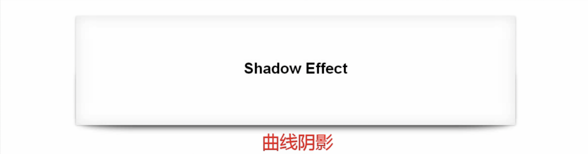
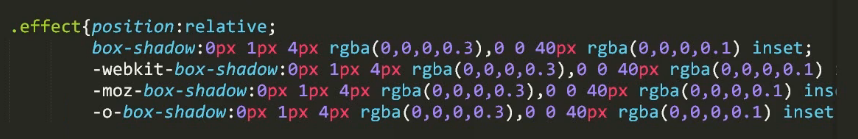
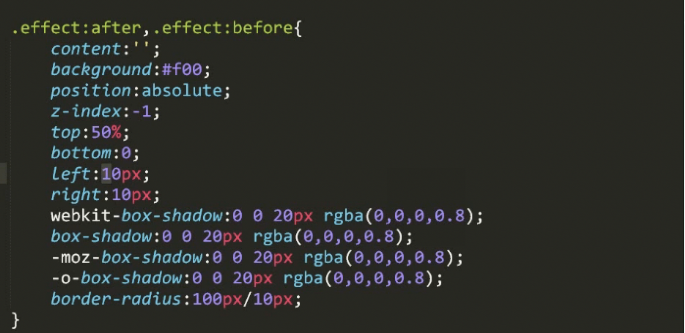
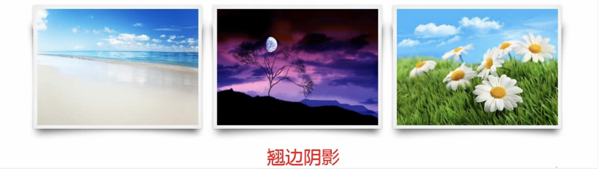
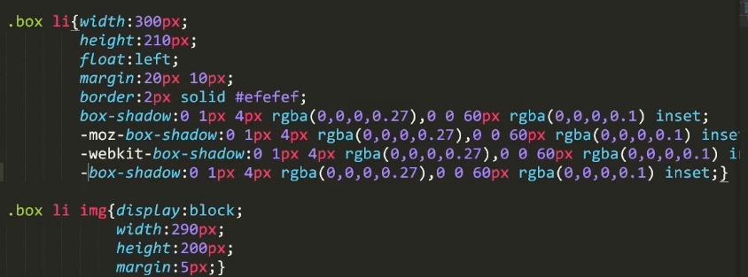
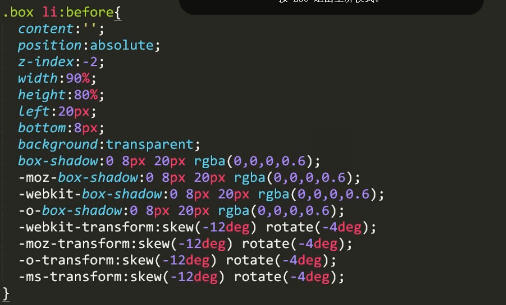
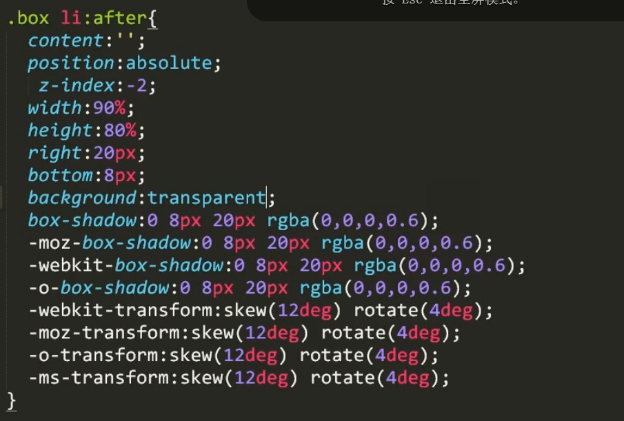
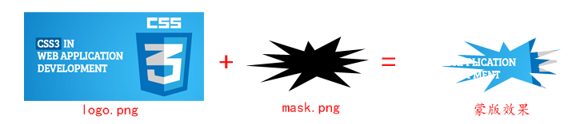

在Safari浏览器下(此Safari浏览器包括iOS的Safari，iPhone上的微信浏览器，以及Mac OS X系统的Safari浏览器)，当我们使用3D transform变换的时候，如果祖先元素没有overflow:hidden/scroll/auto等限制，则会直接忽略自身和其他元素的z-index层叠顺序设置，而直接使用真实世界的3D视角进行渲染。
例如下面的场景，图中红框里面的模块，使用 3D transform变换，进行旋转动画，但是在Safari浏览器下，忽略了二维码遮罩层的z-index,结果使用了真实世界的3D视角进行渲染。出现了重叠的bug：
正常处理文字上下居中的手段是让元素height和line-height相等，但是安卓环境下当字体大小<14px/0.7rem的时候会出现居中失效的情况。
判断系统环境（安卓/IOS）分别作微调；
height: 1rem;
width: 2rem;
font-size: 0.5rem;
变成：
height: 2rem;
width: 4rem;
font-size: 1rem;
transform: scale(0.5);但由于放大之后占据空间，左右会留白，需要利用margin负值 margin: -0.35rem -0.45rem 0;调整
定义了一个动画效果如下(sass代码)：
@keyframes official-featured_rotate {
10%,50%{
transform:rotateY(90deg);
}
60%,100%{
transform:rotateY(0deg);
}
}
&-rotate {
position: absolute;
width: rem(350/2);
height: rem(160/2);
transform-style:preserve-3d;
transform:translate3d(0,0,0);
&.ani_rotate {
animation:official-featured_rotate 5s linear 0s infinite;
animation-delay: 2s;
}
&__item {
width: rem(350/2);
height: rem(160/2);
position: absolute;
&:nth-child(1) {
transform: translateZ(rem(350/4));
}
&:nth-child(2) {
transform: rotateY(90deg) translate3d(0,0,rem(350/4));
}
}
}这里是2个a标签，做90度的旋转效果使得两个a可以循环切换展示。这里2个的基本样式是一致的，宽高也一样。但是在安卓下（ios正常）只有打开页面能看到的第一个a标签能正常跳转，能正常绑定事件。第二个a不能跳转，我就想那我通过点击事件来跳转可以不，结果绑定任何事件都不生效。
然后测试发现，在旋转过程中（只要未完全旋转90度）点击还是能一切正常的。于是把旋转角度改为了89.99度，一切正常。动画效果修改为：
@keyframes official-featured_rotate {
10%,50%{
transform:rotateY(-89.99deg);
}
60%,100%{
transform:rotateY(0deg);
}
}后来查找了一下stackoverflow(https://stackoverflow.com/questions/23548612/cant-click-on-buttons-after-css-transform)。里面也是说了这个解决方法。
设置border-color、background-color等颜色的时候，可以使用currentColor[与当前元素的字体颜色相同]来简化css。
.div{
color: rgba(0,0,0,.85);
font-weight: 500;
text-align: left;
padding: 20px;
border: solid 1px currentColor;
}灰色图可以直接加滤镜，不用切多一张图。如图：
.coupon_style .disable {
-webkit-filter: grayscale(1);
}效果：

代码：


利用:before和:after，加上绝对定位的性质，可以形成一个矩形，这个时候结合CSS3的倾斜属性skew和旋转属性rote。就可以形成一个有旋转角度的平行四边形，这个时候再和原来的矩形重叠，则可产生翘边效果。
效果：

代码：



效果图：

代码：
background: url("images/logo.png") no-repeat;
-webkit-mask : url("images/mask.png");mask.png中黑色代表是不透明的（alpha：1）,其他部分为透明的（alpha：0），将它盖在背景图上，注意：背景图对应mask.png中透明的位置也会变成透明，留下非透明的形状，即背景图的可见形状与mask.png的可见形状相同。 即为"蒙版"。
当图片未正确加载，或加载完成前，由于图片高度为0，其容器会因为没有内容，导致容器无法撑高而塌陷，而如果加载较慢则会再图片加载完成后出现闪烁的情况。
css中，当padding-top/bottom值为百分比时，其值都是以其父元素的宽度为参照对象。因此对于宽高比例固定的情况，可以利用padding-top/bottom用于图片自适应占位，解决页面闪烁的问题。
如果仅设置值padding-top/bottom为百分比，会出现一个问题，就是该方法容器的max-height属性会失效，就无法限制容器的最大高度了。
因此，可以给容器添加一个伪元素的子元素用于撑起内容，该子元素拥有一个padding-top:100%，同时给容器一个max-height尝试限制容器的高度，最后内容用绝对定位的方式添加即可。如：
#container{
width: 50%;
max-height:300px;
background-color:#ddd;
/*由于margin存在塌陷的问题，需要通过构建BFC来保证容器不会受到影响，因此这里可以给容器一个overflow:hidden来保证伪元素的margin不会塌陷。*/
overflow:hidden;
position: relative; /* 父容器相对定位 */
}
.placeholder::after{
content:"";
display:block;
margin-top:100%;
}
img{
position:absolute; /* 内容绝对定位 */
left: 50%;
top: 50%;
transform: translateX(-50%) translateY(-50%); /* 控制内容绝对定位位置 */
width:80%; /* 控制图片不溢出，因此这里使用的图片实际宽度受父容器影响 */
}但是对于宽高比例不定的图片来说，这样做可能导致图片显示不全，使用时要注意。
经过大型项目实践，下面这段CSS是最好的基于rem和vm和calc实践代码：
html {
font-size: 16px;
}
@media screen and (min-width: 375px) {
html {
/* iPhone6的375px尺寸作为16px基准，414px正好18px大小, 600 20px */
font-size: calc(100% + 2 * (100vw - 375px) / 39);
font-size: calc(16px + 2 * (100vw - 375px) / 39);
}
}
@media screen and (min-width: 414px) {
html {
/* 414px-1000px每100像素宽字体增加1px(18px-22px) */
font-size: calc(112.5% + 4 * (100vw - 414px) / 586);
font-size: calc(18px + 4 * (100vw - 414px) / 586);
}
}
@media screen and (min-width: 600px) {
html {
/* 600px-1000px每100像素宽字体增加1px(20px-24px) */
font-size: calc(125% + 4 * (100vw - 600px) / 400);
font-size: calc(20px + 4 * (100vw - 600px) / 400);
}
}
@media screen and (min-width: 1000px) {
html {
/* 1000px往后是每100像素0.5px增加 */
font-size: calc(137.5% + 6 * (100vw - 1000px) / 1000);
font-size: calc(22px + 6 * (100vw - 1000px) / 1000);
}
}